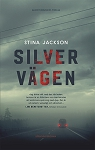
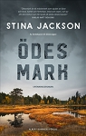

Anna Stina Elisabeth Olofsson Jackson
Författare i Denver, Colorado, USA.
| Född: | 1983-09-01 Skellefteå, Sankt Olovs fs, Skellefteå kn. [1] |
|---|
| Vigsel: | 2006-06-21. |
|---|
| Levde: | 2019 Denver, Colorado, USA. |
|---|
Noteringar
Stina Jackson vinner priset för Årets bästa kriminalroman 2018 för sin debut Silvervägen, meddelar Svenska Deckarakademin idag. Bästa till svenska översatta kriminalroman blev Darktown av Tomas Mullen (översättare Claes Göran Green).
Det blev en debutant som tog hem priset ”Årets bästa svenska kriminalroman” år 2018. Svenska Deckarakademin har beslutat att ge ”Den gyllene kofoten” till Stina Jackson för hennes roman Silvervägen (Albert Bonniers förlag). Motiveringen lyder: ”Mörkt och hypnotiskt om marginella existenser i ett stämningsfullt Norrland”.
Till bästa ”Till svenska översatta kriminalroman” utsågs Tomas Mullen: Darktown i översättning av Claes Göran Green. Motivering: ”Historisk polisroman i rasismens svarta skugga”. Den är utgiven av Historiska Media.
Övriga nominerade till Årets bästa kriminalroman var:
Anders de la Motte: Vintereld
Carin Gerhardsen: Det som göms i snö
Håkan Nesser: De vänsterhäntas förening
Anders Roslund: Tre timmar
Personhistoria
| Årtal | Ålder | Händelse |
|---|
| 1983 |
|
Födelse 1983-09-01 Skellefteå, Sankt Olovs fs, Skellefteå kn [1] |
| 2006 |
22 år |
Vigsel Robert Jackson 2006-06-21 |
| 2019 |
|
Levde Robert Jackson 2019 Denver, Colorado, USA |
Dokument
Källor
| [1] | Mtl Sveriges befolkning 1985 |
| |
|
 |
| 2019-09-27. Det tillkännagavs precis att Stina Jacksons “Silvervägen” är vinnaren av Årets bästa kriminalroman 2018: Silvervägen av Stina Jackson, utdelat av Bonniers Bok Club. Tillkännagivandet gjordes idag, andra dagen på Göteborgs bokmässa. med Stina Jackson. |
| |
|
Stina-Olofsson-Jackson, Denver
www.alex.se/lexicon/article/jackson-stina
|
| |
|
| 2019-11-25. Årets bästa kriminalroman 2018: Silvervägen av Stina Jackson |
| |
|
2019-11-25. Det blev en debutant som tog hem priset ”Årets bästa svenska kriminalroman” år 2018.
Svenska Deckarakademin har beslutat att ge ”Den gyllene kofoten” till Stina Jackson för hennes roman Silvervägen (Albert Bonniers förlag).
Motiveringen lyder: ”Mörkt och hypnotiskt om marginella existenser i ett stämningsfullt Norrland”.
Foto: Svenska Deckarakademin
|
| |
|  |
2018-05-22. Recensionsdag: 2018-06-05
Genre: Deckare
Originalutgåvans utgivningsår: 2018 Omslagsformgivare: Miroslav Sokcic
Utmärkelser:
"Silvervägen" (2018) som tilldelades Svenska deckarakademins pris för årets bästa kriminalroman och priset Glasnyckeln för Årets bästa nordiska kriminalroman.
Boktyp: debutverk
Thema-kod: Deckare
Antal sidor: 300
Mått: 143 x 222 x 25 mm Vikt: 467 g
Format (utgivningsdatum):
Inbunden, 9789100176006 (2018-05-22);
E-bok, epub2, 9789100176020 (2018-05-22); Ljudbok, digital, 9789176518922 (2018-05-22); Ljudbok, mp3-CD, 9789176472088 (2018-05-22); Ljudbok, CD, 9789174334159 (2018-05-22); Pocket, 9789175038919 (2018-11-26); Storpocket, 9789100180379 (2018-12-20)
|
| |
|  |
2020-04-09. Recensionsdag: 2020-04-17
Genre: Deckare
Omslagsformgivare: Miroslav Sokcic
Platser: Arjeplog, Norrbotten
Thema-kod: Deckare
Antal sidor: 300 Format
(utgivningsdatum): Inbunden, 9789100178222 (2020-04-09);
Ljudbok, digital, 9789178274772 (2020-04-17); Ljudbok, mp3-CD, 9789176473047 (2020-04-17); Ljudbok, CD, 9789174334548 (2020-04-17)
|
| |
|
2019-09-29. På Bokmässans andra dag, i fredags, avslöjades vinnartiteln av Bonnier Bokklubbars årliga tävling Årets Bok.
Av de tolv nominerade böckerna var det Stina Jacksons spänningsroman Silvervägen som tog hem priset; som består av 30 000 kronor och en statyett formgiven av Torstensson Art & Design.
Silvervägen ges ut av Albert Bonniers Förlag och finns både som inbunden, storpocket, pocket, ljudbok samt e-bok.
Albert Bonniers Förlag, Årets Bok, Årets Bok 2019, Bokmässan 2019, Bonniers Bokklubbar, Silvervägen, Skönlitteratur, Spänningsroman, Stina Jackson
Det unika med tävlingen är att efter att Bonnier Bokklubbars litteraturredaktörer har utsett de tolv nominerade titlarna, utifrån vissa specifika kriterier; är det helt och hållet upp till läsarna att rösta fram sin favorit.
På andra plats kom Det som göms i snö av Carin Gerhardsen (Bookmark Förlag), och på tredje plats Till minne av en villkorslös kärlek (Norstedts) av Jonas Gardell.
|
| |
|
2019-09-29. Stina Jackson.
Årets bok 2019
Foto: Francis Löfvenholm
|
|

{kind=link}
{kind=link}
{kind=link}
{kind=link}
{kind=link}
{kind=link}
{kind=link}